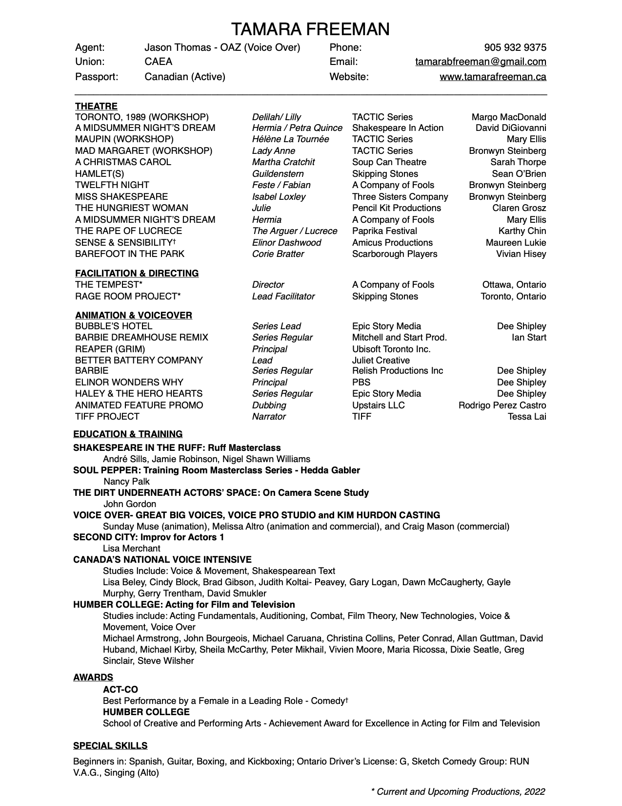

<div class="page-content col-md-12">
	<div class="row">
		<div class="resume col-md-6 col-lg-6">
			<div class="resume-header">
				<a href="downloads/resume.pdf" class="download">
					<i class="fa fa-download" aria-hidden="true"></i>
				</a>
				<h1 class="fancy">
					<a href="downloads/resume.pdf">
						<span>Resume</span>
					</a>
				</h1>
			</div>
			<a href="downloads/resume.pdf">
				
			</a>
		</div>
		<div class="headshot col-md-6">
		</div>
	</div>
</div>